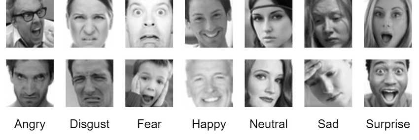

library(tidymodels)
library(tidyverse)
library(tensorflow)
library(tfdatasets)
library(keras)
library(ggplot2)Module 12 Lab: CNNs for Emotion Classification

Library and data loading
train <- image_dataset_from_directory(
"./train",
labels = "inferred",
label_mode = "int",
color_mode = "grayscale",
image_size = c(48, 48),
batch_size = 128,
validation_split=0.2,
seed=123,
subset="training"
)
val <- image_dataset_from_directory(
"./train",
labels = "inferred",
label_mode = "int",
color_mode = "grayscale",
image_size = c(48, 48),
batch_size = 128,
validation_split=0.2,
seed=123,
subset="validation"
)
test <- image_dataset_from_directory(
"./test",
labels = "inferred",
label_mode = "int",
color_mode = "grayscale",
image_size = c(48, 48),
batch_size = 128
) Plot one image from each class
c(images, labels) %<-% as_iterator(train)$get_next()
class_names = train$class_names
par(mfrow = c(3, 3))
p <- list()
j=0
for(i in 1:128){
image <- images[i,,,]$numpy()
label <- class_names[labels[i]$numpy() + 1]
if(label %in% class_names){
j=j+1
class_names = class_names[class_names != label]
image <- as.data.frame(image)
colnames(image) <- seq_len(ncol(image))
image$y <- seq_len(nrow(image))
image <- gather(image, "x", "value", -y)
image$x <- as.integer(image$x)
p_ <- ggplot(image, aes(x = x, y = y, fill = value)) +
geom_tile() +
scale_fill_gradient(low = "black", high = "white", na.value = NA) +
scale_y_reverse() +
theme_minimal() +
theme(panel.grid = element_blank()) +
theme(aspect.ratio = 1) +
xlab(paste('Image for : ', label)) +
ylab("")+
guides(fill = FALSE)
p[[j]]<-p_
}
}
library(gridExtra)
grid.arrange(
grobs = p
)Exercise 1
model <- keras_model_sequential() %>%
layer_rescaling(scale = 1/255) %>%
...Compile and fit the model
model %>% compile(
optimizer = 'adam',
loss = loss_sparse_categorical_crossentropy,
metrics = 'accuracy'
)
model %>% fit(train,
epochs = 10,
validation_data = val)Evaluate on the test set
model %>% evaluate(test)